| 日付 | 2016年6月18日（土） |
|---|---|
| 山域 | 赤城・榛名 |
| メンバー | 家族（妻、長女・5歳、長男・3歳） |
| 山行形態 | 子連れ日帰り |
| アクセス | 車 |
| ルート (Map) | 鳥居峠 (8:58) - (9:54) 小地蔵岳 - (10:10) 長七郎山 (10:40) - (11:04) 小沼 (11:54) - (12:28) 鳥居峠 - 覚満淵一周 - (13:15) 鳥居峠 |
本日は梅雨の晴れ間。全国的に晴れそうだ。
かなり暑くなりそうなので、ある程度標高の高い山に行く必要がある。
今回は赤城山の一峰、長七郎山に行ってみることにする。
鳥居峠駐車場に到着する。標高1390m。
花の季節でないからか、梅雨の季節だからか、案外空いている。
朝家を出るときは早朝にもかかわらずかなり暑かったが、ここは比較的涼しい
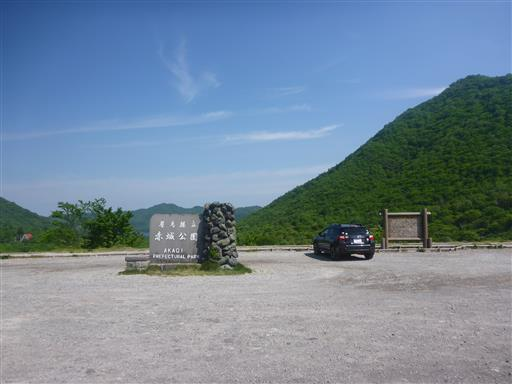
駐車場からは眼下に覚満淵が見渡せる。
非常に景色が良い駐車場だ。
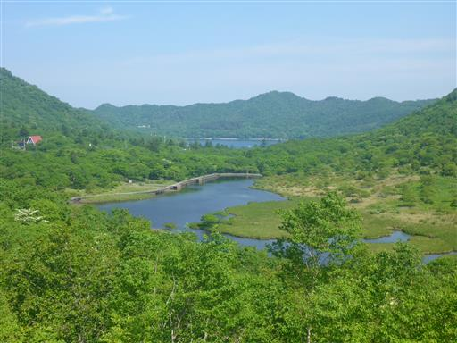
ここはかつて赤城山ケーブルカーの山頂駅があった場所だ。
赤城山から容易に車で入れるようになったことで、
開業から僅か10年後の1968年に廃線になってしまった。
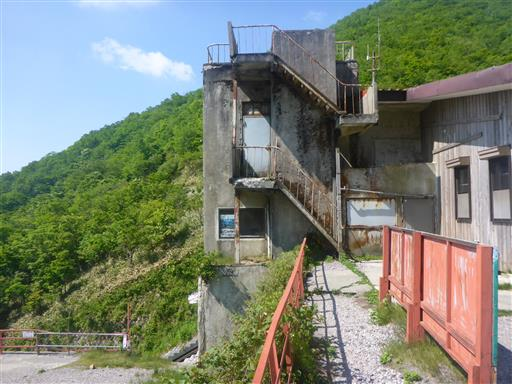
駅舎跡からは赤城山の外側の展望が望める。山々が幾重にも折り重なっている。
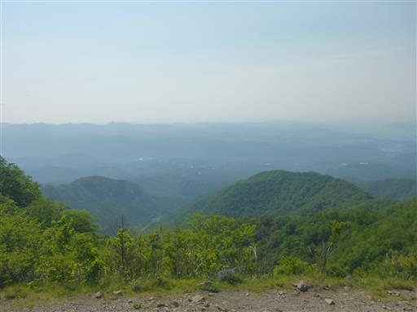
駅舎はサントリー・ビア・バーベキューホールに改装されている。
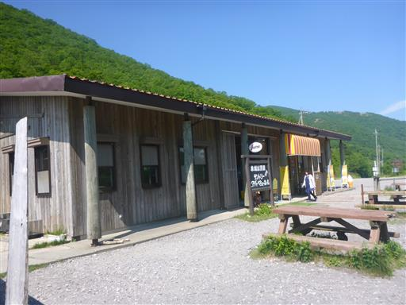
駐車場が登山口になっているので、ここから登り始める。
ハルゼミの鳴き声が心地よい。
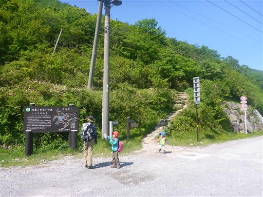
最初から歩き始めた息子は、早速大好きな棒を拾っている。
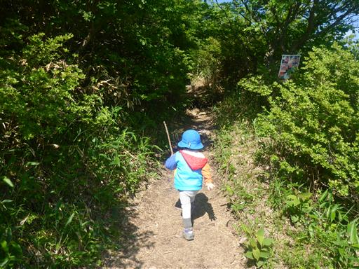
棒に飽きると次は葉っぱ…

元気に階段を登る。
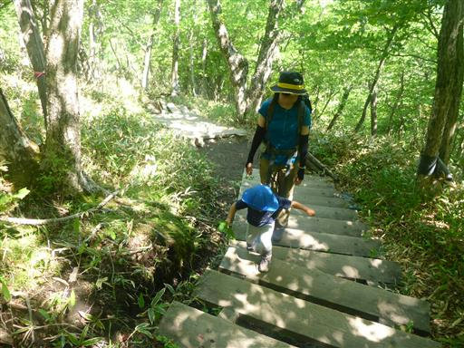
セミを発見。生まれたばかりなのか、死にかけなのかあまり動かない。
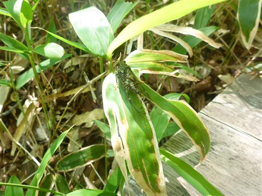
笹を引っぱって遊んでいる。
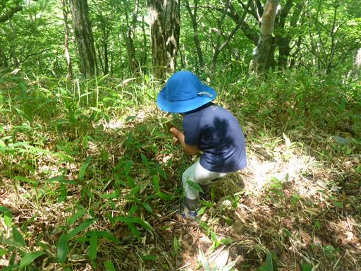
お次は実を拾う。なかなか前に進まない。
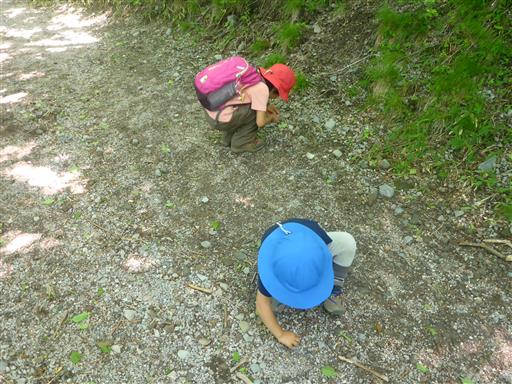
頭上には淡いピンク色のサラサドウダンが咲いている。
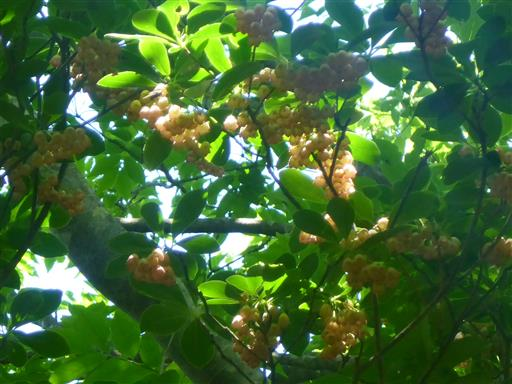
メインロードから外れて小地蔵岳に立ち寄る。
樹林に覆われた何もないピークだ。
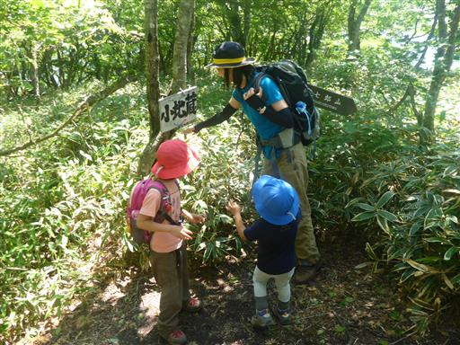
広い尾根に出る。傾斜が緩くなり歩きやすい。
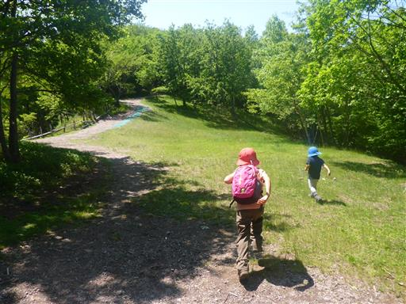
遠く足尾山塊の山々が見えている。まだほとんど足を踏み入れてない山域だ。
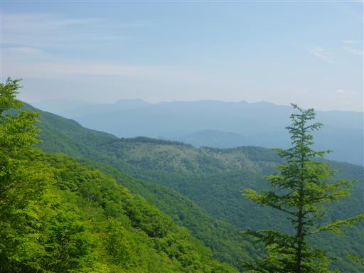
山頂直下。息子は山頂まで歩ききった。
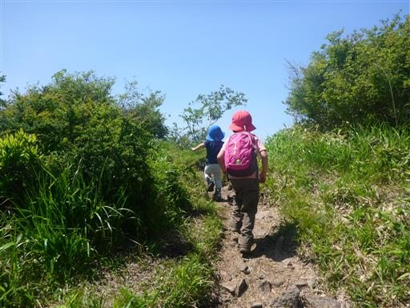
長七郎山に到着。標高1579m。
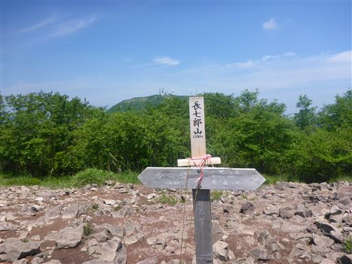
山頂にある積み上げられた石の上に登る。
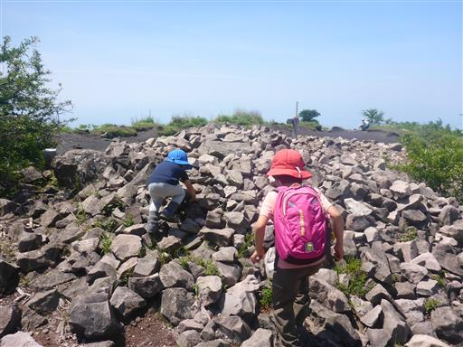
人工的に積み上げられた石っぽいが、とりあえずここが一番標高が高そうだ。
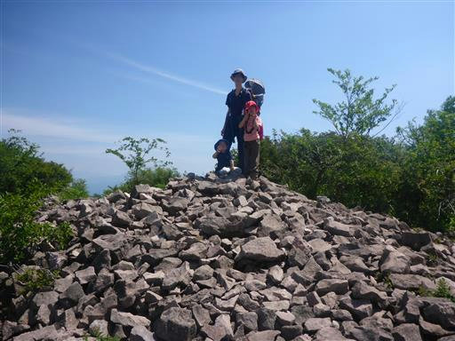
山頂からの展望はまあまあ。目立つ山は見えないが、低い山々が見えている。
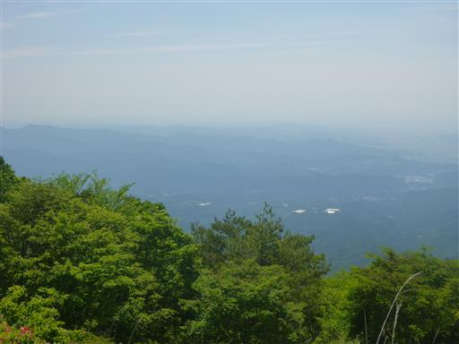
こちらは赤城山の一峰、荒山。昨年登った山だ。
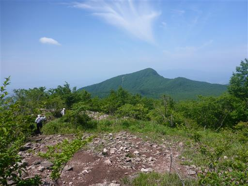
山頂部は広い。昼食にはまだ早いので、おやつを食べて少しのんびりする。
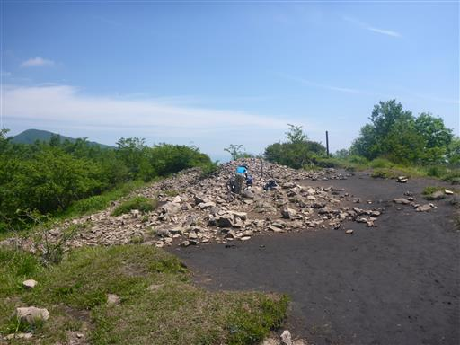
尺取り虫を発見。動きは可愛らしいが見た目は…
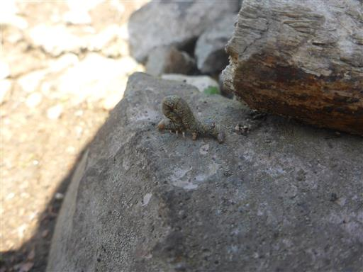
カメノコテントウ。今日は色々な生物が見つかる。
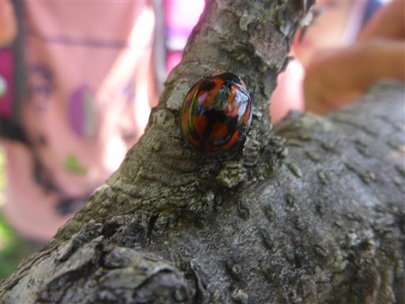
山頂を出発する。この山は周回コースが取れるため、違うコースを下る。
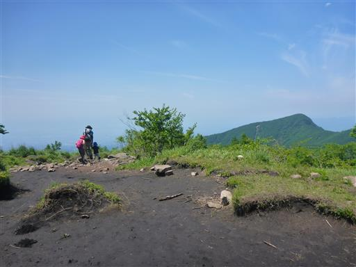
地蔵岳が見える。地蔵岳も赤城山を代表するピークだ。
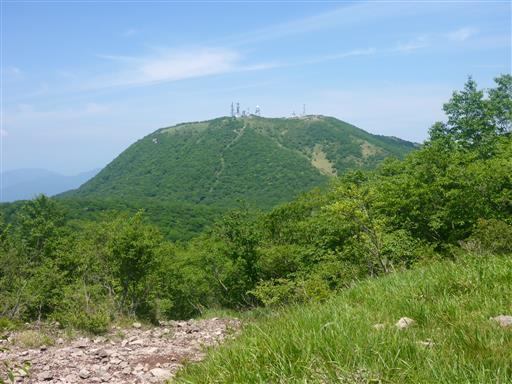
小沼の畔に下りてくる。
赤城山の中心部にある大きな湖は大沼、対するこちらは小さな小沼だ。
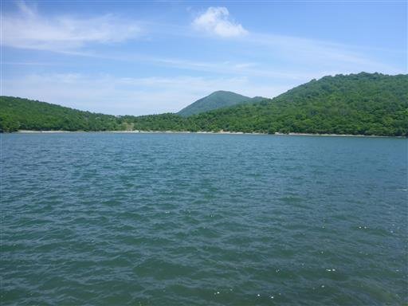
砂浜がある対岸まで、遊歩道を半周歩く。
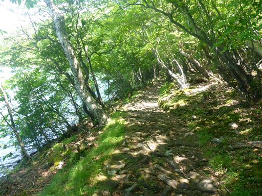
湖には鴨が浮かんでいる。
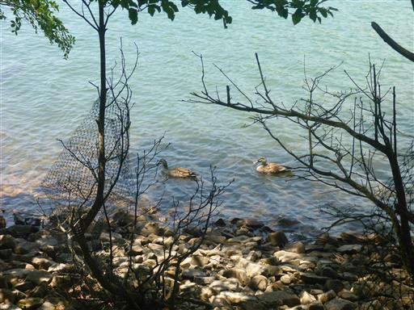
砂浜に到着。ちょうどベンチとテーブルがあるので、ここで昼食休憩をとることにする。
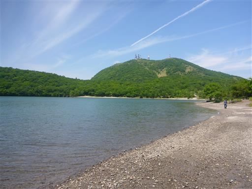
娘は棒で水をつついて遊んいでいる。
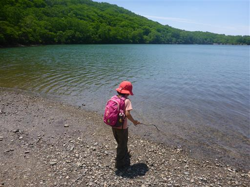
速足で歩いた娘から少し遅れて息子もやってくる。
新緑の季節は終わっているが、濃い緑もきれいだ。
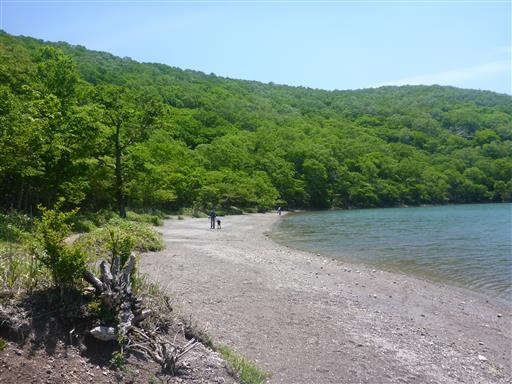
湖を緑のボールが流れてきた。
近くの人に声を掛けると持ち主が見つかった。
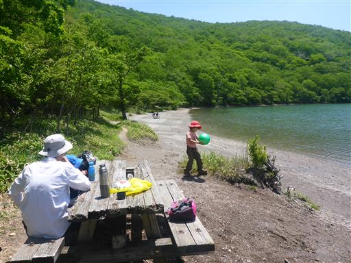
遠足なのか、学生が大量にやって来る。
少し離れているとはいえ騒がしくなる。
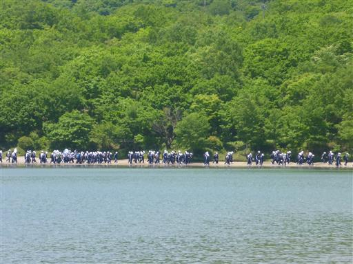
昼食を取ったら出発する。
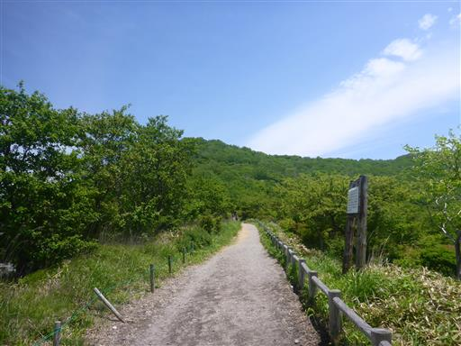
目の前に黒檜山が聳えている。赤城山の最高峰で、さすがに迫力がある。
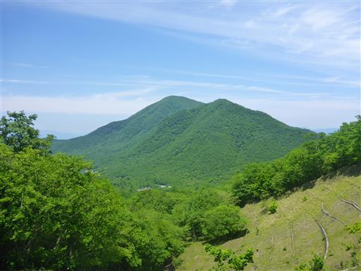
鳥居峠に戻ってくる。
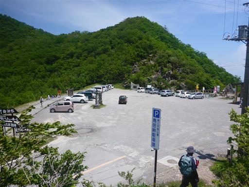
せっかくここまで来たので、覚満淵も散策することにする。
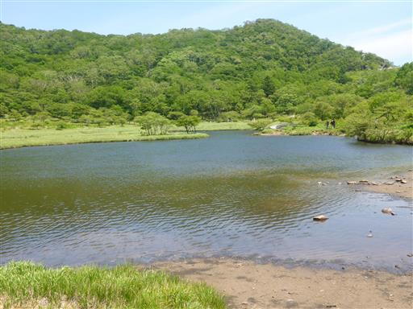
周囲1km程の高層湿原。木道が敷設されていて、一周まわれるようになっている。
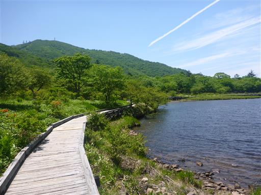
水深は浅い。波が光を反射して美しい。
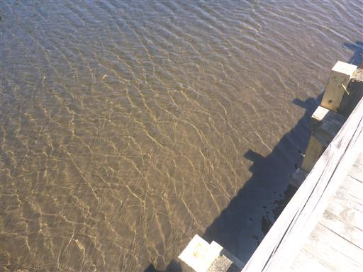
水の中は無数のオタマジャクシが泳いでいる。
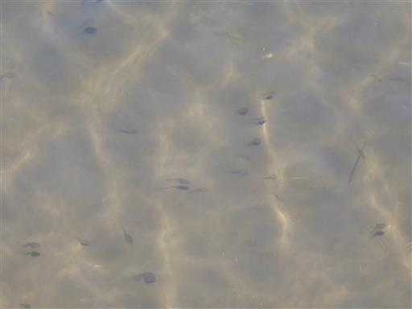
背景は地蔵岳。風光明媚なところで、ここは観光客の数が多い。
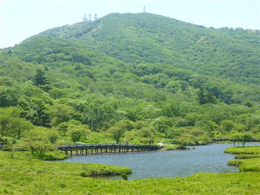
終わりかけのレンゲツツジがわずかに咲いている。
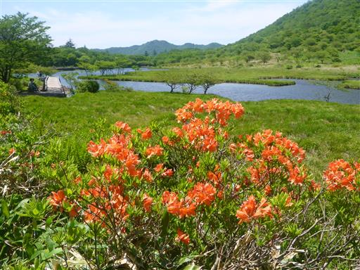
45分ほどでぐるっと一周まわってくる。
短いコースだったが、変化があり美しい風景を眺められた一日だった。
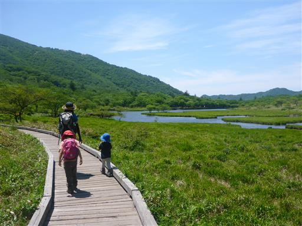